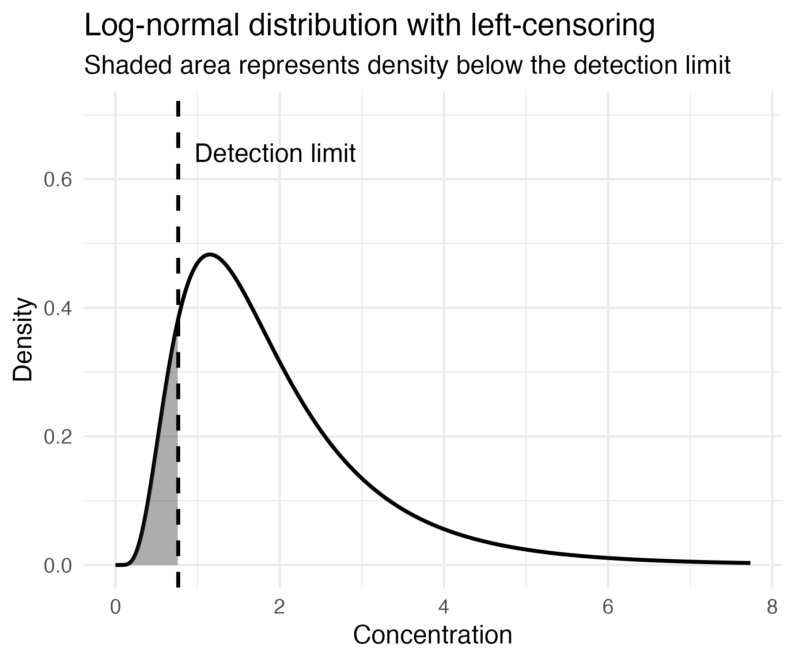

# Toy dataframe
df <- data.frame(
concentration = c(0.2, 0.5, 1.0, 0.4, 2.0, 0.3),
censored = c(TRUE, TRUE, FALSE, TRUE, FALSE, TRUE)
)
# Created the log-normal estimated distribution
estimated_distribution <- NADA2::ros(df$concentration, df$censored)
# Calculated unbiased summary statistics
mean(estimated_distribution)
median(estimated_distribution)
# Test to evaluate guideline exceedances for an example contaminated site based on a censor-aware concentration point estimate
point_estimate <- quantile(fit, 0.95)
guideline <- 0.35
exceedance <- point_estimate > guidelineNADA2: Accurate environmental monitoring starts with handling censured data
code
analysis
Image taken from: A global agreement to tame chemical pollution | United Nations. https://www.un.org/en/climatechange/global-agreement-tame-chemical-pollution. Accessed January 17, 2026.
With industrialization, humans have influenced the environment in which they live. We synthesize chemicals for specific uses and extract natural resources with chemical byproducts as waste. Exposure to chemical contaminants is unavoidable; even in environments that appear pristine and are free of human influence, such as regions of the Arctic, persistent synthetic chemicals can be detected by laboratory methods.1
The fields of analytical chemistry and toxicology converge to measure concentrations of chemical contaminants in the environment, in our food, water, and consumer products, and in our bodies, and to assess their associated health effects. With the backlog of chemical contaminants we are exposed to, many of whose toxicology is unknown, and the thousands of chemicals we encounter in our lives, methods in toxicology have been changing to keep up with the public health concern.2–4 However, at its root, effective chemical measurements through laboratory testing are needed to assess risk.
Each method for measuring chemical concentrations has a lower limit, below which the instrument is not sensitive enough to detect true differences in concentrations. This inherent artifact of analytical instruments, though technology is continuously improving to get lower and lower detection limits of trace chemicals.
Environmental chemistry typically follows a log-normal distribution,5 i.e., a right-skewed distribution, with fewer “hits” of hot spots with high-concentration observations relative to the majority of the dataset. Replacing the <DL values with a constant cuts off the lower tail of the distribution, as shown in Figure 1. This is known as left-censored data.

Note: Example figure was generated with ChatGPT5
Common practice in environmental monitoring is to impute observations below the detection limit (<DL) to either 1 × DL or 1/2 × DL, because the data exists, but is not observable.6 This has traditionally been practical and was an accepted bias in summary statistics used in chemical evaluation. However, by doing so, you lose the data’s variability, which informs inferential techniques such as confidence intervals and hypothesis testing. And, depending on the distribution of the data and the substitution made, this can both overestimate and underestimate risk, collapsing a range of values into a single guess.
Another option–though, is arguably even worse!–would be to remove the censored data completely, removing that valuable information for when concentrations are low and artificially inflating the detected concentrations. Comparisons of contaminated environments that are of concern to surrounding life are usually done using summary statistics, such as upper bounds on chemical concentrations (or lower bounds for toxic effects), which can bias summary statistics used in chemical risk assessment.
Overall, these two approaches do not incorporate modern methods for handling censored data based on probability and distributional data, and multiple options now exist to incorporate into your workflow, contributing to more accurate, measured downstream analyses.
Three methods exist: parametric testing, which assumes a particular distribution for the data; non-parametric testing, which makes no distributional assumptions but ranks observations; or semi-parametric testing, which combines both, assuming a distribution while also ranking observations.7
NADA2 is an R package that provides tools to handle censored data.8 It can incorporate the distribution of the data and provide a probabilistic representation of concentrations that are <DL, thereby avoiding the fixed, direct substitution methods. It is aware of the censorship of the data, allowing for more explicit incorporation of uncertainty and unbiased summary statistics.
Most commonly, a semi-parametric approach called Regression on Order Statistics (ROS) is used.8 Given that environmental chemistry data is often log-normal, ROS applies a log transformation and ranks observations with their expected normal quantiles. A regression is then used to estimate where censored observations would plausibly fall in the lower tail of the distribution. Here, the censored data is not replaced; instead, values are inferred from the distribution to avoid bias in how the data is used. In other words, the probability distribution is conditional on whether the data is censored or not, as described below:
\[ X_i = \begin{cases} x_i, & \text{if detected} \\ < DL_i, & \text{if censored} \end{cases} \] For censored observations: \[ P(X \le x \mid X < DL) \] For detected observations: \[ P(X \le x \mid X \ge DL_{\min}) \] Note: Equations generated by ChatGPT5
This is what’s going on under the hood for the following example code:
The semi-parametric ROS approach is best used when the distribution of data may not fully fit a log-normal distribution, which is often the case in real-world scenarios. It is also reasonably defensible for a high degree of censored data, with a frequency of 30%-50%.7 It is effective for summary statistics, trends, and guideline comparisons; however, it is not a predictive model.
The choice of approach depends on the assessment’s goal. If a predictive model is needed, such as estimating concentrations of chemicals in a lake based on the current outflow and concentrations, and a distribution assumption is defensible, then parametric testing would be needed. In this case, NADA provides parametric testing that assigns a distribution and uses Maximum Likelihood Estimates (MLE) to predict concentrations.7,8 An example of the code is below:
# NOTE: this function is from the older package NADA
parametric_distribution <- NADA::cenmle(df$concentration, df$censored, dist = "lognormal")Non-parametric metrics, such as the Kaplan-Meier estimator, make minimal distributional assumptions; this can be suitable depending on how your data looks, allowing you to still extract valuable information. However, the representations of left-censored data are poorer compared to semi-parametric and parametric methods, with limited extrapolation from observed values and no smoothing.9 Therefore, it is less sensitive.
The incorporation of NADA2 or similar packages into an environmental data science workflow is not too much additional work, but does require a shift in perspective. There may be an initial learning curve to understand what’s happening, but the coding is minimal and defensible. Environmental scientists may be resistant to turning to a coding-based workflow and to changing their approach based on what has always been done or what has previously been accepted, but the benefits outweigh the initial discomfort.
This is needed because some chemical contaminants have very low recommended safe doses that are approaching the detection limit of our best laboratory methods. As a result, small biases in our imputed values, which may be minor when chemical concentrations are well above the detection limit, can have a much greater impact as measured concentrations approach the detection limit. As environmental scientists, we now have the tools to do better: to accurately represent the data in our studies, make inferences, and have measured remediation strategies and protections for the environment and the life within it.
References
- Persistent Organic Pollutants: A Global Issue, A Global Response | US EPA. https://www.epa.gov/international-cooperation/persistent-organic-pollutants-global-issue-global-response. Accessed January 13, 2026.
- Krewski D, Westphal M, Andersen ME, et al. A framework for the next generation of risk science. Environ Health Perspect. 2014;122(8):796-805. doi:10.1289/ehp.1307260
- Bell SM, Chang X, Wambaugh JF, et al. in vitro to in vivo extrapolation for high throughput prioritization and decision making. Toxicol Vitr. 2018;47(December 2017):213-227. doi:10.1016/j.tiv.2017.11.016
- Tox21. Toxicology in the 21st Century. https://tox21.gov/overview/about-tox21/. Accessed January 8, 2025.
- Andersson A. Mechanisms for log normal concentration distributions in the environment. Sci Reports 2021 111. 2021;11(1):16418-. doi:10.1038/s41598-021-96010-6
- Mihalache OA, Dall’Asta C. Left-censored data and where to find them: Current implications in mycotoxin-related risk assessment, legislative and economic impacts. Trends Food Sci Technol. 2023;136:112-119. doi:10.1016/J.TIFS.2023.04.011
- Holbert C. How to Calculate Summary Statistics for Left-Censored Data. https://www.cfholbert.com/blog/summary-statistics-censored-data/. Published 2022. Accessed January 17, 2026.
- NADA2 package - RDocumentation. https://www.rdocumentation.org/packages/NADA2/versions/2.0.1. Accessed January 8, 2026.
- Wey A, Connett J, Rudser K. Combining parametric, semi-parametric, and non-parametric survival models with stacked survival models. Biostatistics. 2015;16(3):537. doi:10.1093/BIOSTATISTICS/KXV001